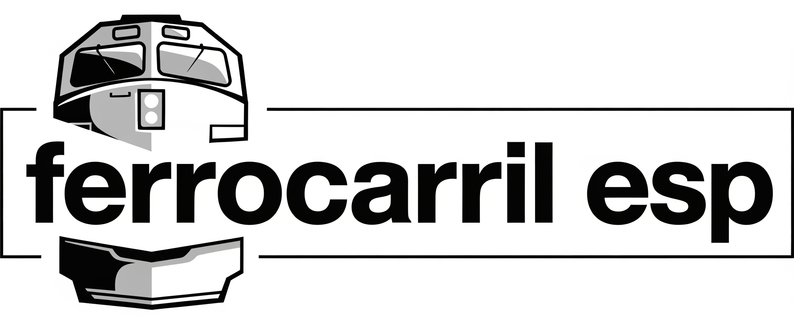

Blog Ferrocarriles
Inicio
Ancho ibérico
Proyectos en estudio
Sevilla
Mapa por provincias
🔍 Curiosidades
Descubre datos curiosos y anécdotas fascinantes del mundo ferroviario español
Filtrar por categorías adicionales:
Sevilla
Madrid
Barcelona
Ancho Ibérico
← Volver al Inicio